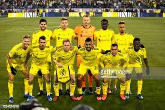

Conheça a gente

Nashville Soccer Club é um time da Major League Soccer com sede em Nashville, Tennessee . A equipe começou a jogar na liga em 2020 como uma continuação do clube USL de mesmo nome e joga suas partidas em casa no Nissan Stadium , com a intenção de se mudar para um estádio para 30.000 lugares no Nashville Fairgrounds a ser construído em um futuro próximo . É propriedade principalmente de John Ingram, proprietário da Ingram Industries, juntamente com investidores e proprietários parciais da família Turner da Dollar General Stores e da família Wilf.
Quem somos
O apoio de Nashville SC é organizado pelo The Backline Supporters Collective, uma organização guarda-chuva para todos os grupos de apoiadores independentes. Os grupos de apoiadores incluem Roadies, The Assembly, Eastern Front, Music City Supporters, Music City Heaters e La Brigada de Oro. O Backline coordena uma atmosfera social e inclusiva pré-jogo para todos os torcedores, orquestra um ambiente turbulento e barulhento na extremidade do estádio dos torcedores para impulsionar o Nashville SC à vitória e facilita viagens para jogos fora de casa.